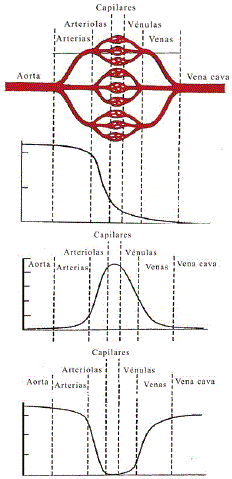

NO ME SALEN
(PROBLEMAS RESUELTOS DE BIOFÍSICA DEL CBC)
FLUIDOS
Caudal y continuidad
|
|

|
| |
 |
|
18- La sangre sale del corazón a través de la
aorta que se ramifica en arterias de menor sección.
En el sistema circulatorio, siempre que un vaso
tronco se ramifica ocurre que las ramas son de
menor sección que el tronco, pero la sección total
de las ramas es mayor que la sección del tronco
original. Por ejemplo, la sumatoria de las secciones
de las arterias es mayor que la sección de la aorta.
|
|
|  |
|
Este esquema se repite en la ramificación de arterias,
arteriolas y los finísimos capilares que conducen
la sangre a los órganos y músculos. Luego
sigue un esquema inverso: el flujo pasa desde los
capilares a las vénulas, venas menores y venas
mayores que llevan de vuelta la sangre al corazón.
a) Indique cuál de los tres gráficos representa
mejor la sección total de los vasos sanguíneos a lo
largo de los distintos sectores del sistema circulatorio.
E indique cuál es el gráfico que mejor representa
la velocidad de la sangre en los diferente tramos.
b) Esta carácteristica del árbol circulatorio,
¿qué implicancia tiene respecto a la velocidad de
la sangre a lo largo del circuito? ¿qué ventaja
funcional tiene esta estructura?
c) Sabiendo que el caudal sanguíneo es, para
una persona en reposo, de 5 l/min y los radios disminuyen
desde 10 mm para la aorta a 0,008 mm
para los capilares y la sección total de los capilares
de aproximadamente 2000 cm².
i) Determinar el número de capilares y el caudal
en cada uno de ellos.
ii) Determinar la velocidad de la sangre en la
aorta y en cada uno de los capilares. |
|
|
|
Mirá, vamos a resolver esa cuestión de los gráficos en último término. Si analizamos las cuestiones cuantitativas previamente, elegir los gráficos correspondientes va a ser una pavada.
c) Sabiendo que el caudal sanguíneo es, para
una persona en reposo, de 5 L/min y los radios disminuyen
desde 10 mm para la aorta a 0,008 mm
para los capilares y la sección total de los capilares
de aproximadamente 2000 cm². Primero, ese número, 5 L/min, te lo tenés que grabar de memoria a fuego, lo mismo que su equivalente en unidades internacionales, 8,33 x10-5m3/s, es el caudal sanguínea total humano, si querés, medido a la salida del corazón. Es un caudal medio, ya que supongo que te habrás dado cuenta el caudal real es pulsante.
Como el sistema cardiovascular es cerrado, ese caudal se mantiene constante a todo lo largo del sistema. Pero eso no quiere decir que por cada vaso, grande o pequeño pase ese mismo cauda... quiere decir que el caudal se mantiene a lo largo de la sección sumada de cada vaso o vasito o sea de cada tramo anatómico-fisiológico por decirlo de alguna manera. Los vasos capilares son muy finitos (de ahí su nombre: finitos como pelos) por cada capilar circula muy poca sangre en comparación con los 5 litros por minuto del corazón. Pero si considerás todos, absolutamente todos los capilares del cuerpo, por ahí, pasa exactamente el mismo caudal que sale del corazón y después de uns minutos vuelve a entrar en el corazón sin pérdida ni ganancia. Acá en este link, te explico de otra manera ese asunto de cómo ha de considerarse el caudal en los sistemas ramificados.
i) Determinar el número de capilares y el caudal
en cada uno de ellos. Esto es súpersencillo. El número de capilares surge dividiendo la sección capilar total por la sección de un capilar solo. Eso es fácil. La sección de un capilar solo no la tenemos, pero tenemos su radio.
S1c = π rc² = 3,14 (8 x 10-6 m)²
S1c = 2 x 10-10 m²
Ahora divido ambas secciones.
#caps = STc / S1c
#caps = 2 x 10-1 m² / 2 x 10-10 m²
|
|
|
| |
#caps = 109 = 1.000.000.000 (¡mil millones!) |
|
|
|
|
ii) Determinar la velocidad de la sangre en la
aorta y en cada uno de los capilares. La velocidad en los capilares, tenemos que plicar el principio de continuidad pero aplicado no a un capilar sino a la sección total capilar (caudal en el corazón igual a caudal en la sección total capilar) , que es el dato del enunciado, que ya usamos en el ítem anterior.
v1c = Q1c / S1c
v1c = Qc / Sc
v1c = 8,33 x 10-14 m³/s / 2 x 10-10 m²
|
|
|
| |
v1c = 4,15 x 10-4 m/s = 0,415 mm/s |
|
|
|
|
Como ves, en el capilar la sangre se mueve muy lentamente. Y es lo lógico que que es el capilar y no en otro lugar donde la sangre cumple su función fisiológica de intercambios gaseosos y moleculares, procesos que requieren bastante timpo. En el resto del árbol la sangre sólo se desplaza, sólo se mueve de un lado a otro.
Vamos con los gráficos. |
|
|
|
|
El esquema de arriba te sirve de eso, de esquema. Acordate que los capilares rondan los mil millones. En general se organizan en pequeños glomérulos capilares (al conjunto de glomérulos lo llamamos lecho capilar) y cada glomérulo es alimentado por una arteriola que se ramifica en más o menos mil capilares. O sea, la cosa es un poco más abrupta que lo que indica el gráfico, pero...
El de abajo de todo, con forma de valle, bien podría esquematizar la velocidad de circulación en los vasos individuales. La parte de arriba valdría 0,21 m/s (velocidad en la aorta o en la cava) y la del fondo 0,000415 m/s (velocidad en un capilar cualquiera).
El que le sigue, con forma de montañita, puede representar la sección total de cada etapa fisiológica. Las partes de abajo de la montaña valdrían 3 cm² (aorta y cava) y la parte de la cima de la montañita 2000 cm² en la sección total capilar.
El de arriba, co forma de S invertida puede graficar varias cosas, una de ellas podría ser pa presión de la sangre a lo largo de sistema. Arrancaría en 10 cmHg y terminaría en 0,5 cmHg, ponele. |
|
|
|
| |
|
|
| |
|
|
Para saber más: Acá cómo hay que considerar el caudal en las ramificaciones. Acá un apunte teórico para entender un poco más el sistema cardiovascular mamífero. |
|
 |
| |
|
| Algunos derechos reservados.
Se permite su reproducción citando la fuente. Se recomienda fervientemente su lectura en bibliotecas, escuelas, clubes y reuniones de consorcios. Última actualización mar-20. Buenos Aires, Argentina. |
|
|
| | |
|
|